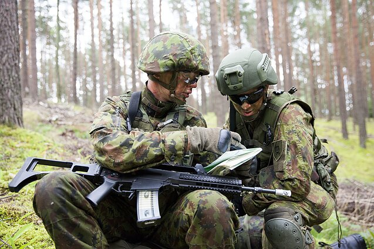

- Sausumos
- Jūros
- Oro
Karys yra Lietuvos valstybės gynėjas ir jo tarnyba reikalauja specialių ištikimybės valstybei santykių. Šiuo metu pagal teisės aktus yra reglamentojami tokie pagrindiniai tarnybos būdai.18–23 metų amžiaus vaikinai, turintys Lietuvos Respublikos pilietybę, yra šaukiami atlikti nuolatinę privalomąją pradinę karo tarnybą (NPPKT), neatsižvelgiant į tai, ar gyvena Lietuvoje ar užsienyje. Karo prievolininkams, kuriems tarnyba buvo atidėta dėl studijų, šaukimas pratęsiamas iki 26 metų amžiaus imtinai.
Lietuvai tapus NATO dalimi, Karinės jūrų pajėgos specializuojasi jūrinių minų paieškos ir nukenksminimo srityje, išlaiko bei plėtoja atitinkamus pajėgumus, skirdamos laivus bei personalą NATO nuolatinės parengties priešmininių laivų I-ąjai grupei ir NATO greitojo reagavimo pajėgoms. Taip pat Karinės jūrų pajėgos kasmet skiria laivus ir štabo personalą Baltijos šalių karinių laivų junginio BALTRON veiklai vykdyti, bei rengia ir skiria karių komandas Europos Sąjungos karinėms operacijoms „Atalanta“ (Indijos vandenyne) ir „Sophia“ (Viduržemio jūroje).

LK Karinės oro pajėgos formuojamos iš profesinės karo tarnybos karių ir civilių tarnautojų, kurie aktyviai dalyvauja tarptautiniuose mokymuose, pratybose bei kituose karinio bendradarbiavimo projektuose ir renginiuose, visuomenės gyvenime. Kaune įsikūrusi Karinių oro pajėgų vadovybė ir Oro erdvės stebėjimo ir kontrolės valdyba (OESKV), Kauno raj., Karmėlavoje - OESKV Oro erdvės ir kontrolės centras. Aviacijos bazė ir Ginkluotės ir technikos remonto depas dislokuoti Šiauliuose, o Oro gynybos batalionas - Radviliškyje.